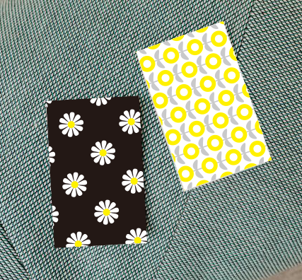
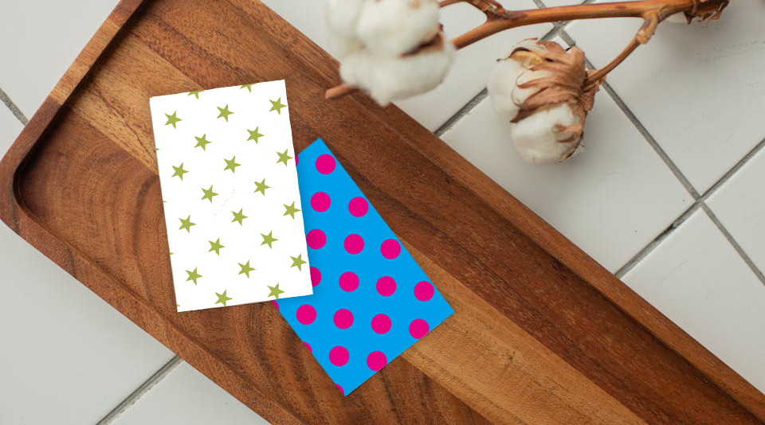

ポチ袋

体験入学に来る高校生に向けて制作しました。 全てを体験してもらう時間はないため、時間内で完結できることを考え、お土産として持ち帰ることができます。 帰宅してからも記憶に残るような体験授業を考えています。

| ターゲット | オープンキャンパスに来る高校生 |
|---|---|
| 目的 | 体験授業の間に制作からプリンターで印刷、カット、糊付けまで実施し、持ち帰ることができるもの |
| デザインプロセス | 時間の制約もあるため、全てを体験してもらうことはできないので、 型は予め作っておき、好きなパターン制作を実施する |
| 制作時間 | 2時間 |
| 制作ツール | Illustrator |
TOPへ戻る